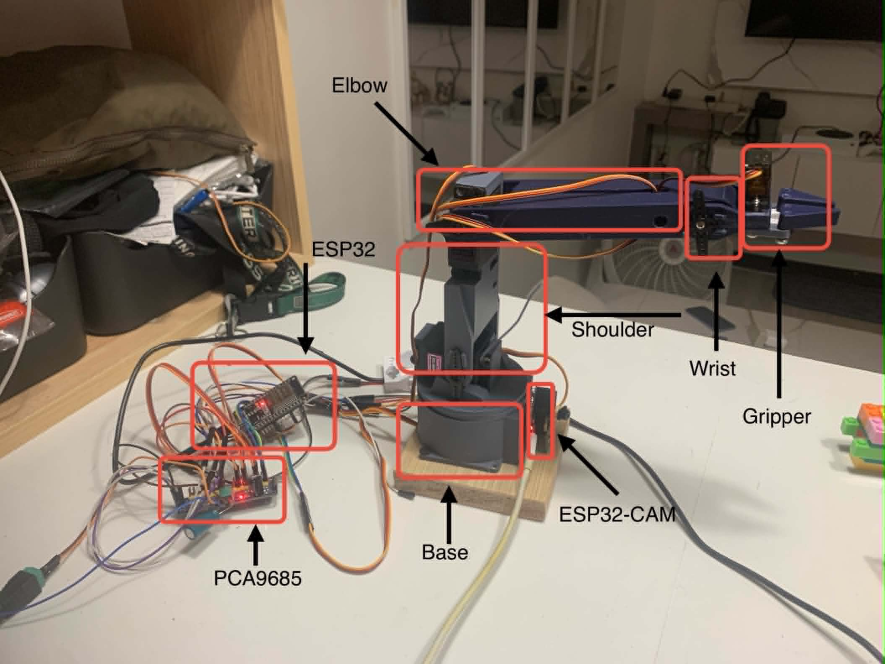
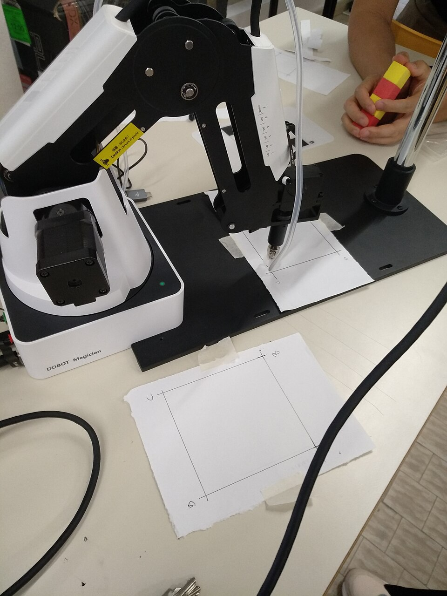
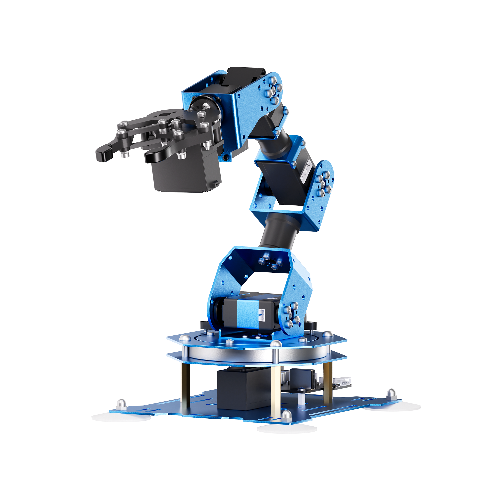

Program by snapping blocksTeachable visionWorks fully offline
In one sentence
The camera sees, the PC thinks,
and the arm acts.
SEES ESP32-CAM (or laptop webcam) captures a frame
→
THINKS YOLOv8n on the PC detects & classifies the piece
→
ACTS ESP32 arm moves over WebSocket to sort it
Each capability lives on the device best suited to it — a deliberate split.
The problem
Cost & access — commercial educational arms start around PHP 8,500–17,000+, out of reach for many schools.
Programming barrier — most platforms need real coding; beginners can't start.
Rigid perception — fixed object sets; students can't teach it their own objects.
Infrastructure — many depend on home WiFi or cloud accounts, awkward in class.
Our answer
A 3D-printed, hobby-servo 5-DOF arm + a block-coding IDE + YOLOv8 vision +
a Grade 7–10 curriculum, running fully offline on the robot's own WiFi — built for
≤ PHP 3,500.
Objectives
GO: a low-cost, modular 3D-printed 5-DOF pick-and-place arm for object
sorting in secondary education — manual control + automated detection + a grade-level curriculum.
#
Specific objective
Target
SO1
Cost-effective modular 3D-printed arm
Total cost ≤ PHP 3,500
SO2
Manual control + automated object detection
mAP ≥ 70.0, responsive UI
SO3
Optimized sorting & motion control
≥ 90% pick-and-place success
SO4
Structured lesson manual
Grade 7–10 progression
SO5
Assess educational impact with students
Surveys + guided unit tests
Results — all five objectives met
PHP 3,116SO1 cost — 89% of the ≤3,500 target
98.8%SO2 mAP@0.5 — target was 70.0
92.5%SO3 pick-&-place — target ≥90%
4 modulesSO4 Grade 7–10 manual
SUS 71.3SO5 usability — "Good" (>68)
Every target was met or exceeded — most by a wide margin.
Serves control page, drives 5 servos via PCA9685, WebSocket motion
3 · Camera(optional)
ESP32-CAM (OV2640)
Streams JPEG frames; auto-joins the arm's network
Laptop / Browser Blockly · YOLOv8 · FastAPI
⇄ WS/HTTP
ESP32 Arm AP · PCA9685 · WebSocket
⇄ WiFi
ESP32-CAM /capture · /stream
The hardware
5-DOF: base, shoulder, elbow, wrist, gripper
Open-source Thingiverse design (thing:3039476)
12 printed parts, Esun PLA+ @ 20% infill
Base/shoulder/elbow: MG996R servos ×3
Wrist/gripper: MG90S micro servos ×2
PCA9685 16-ch PWM driver (I²C: SDA 21 / SCL 22)
Dedicated 5V/3A supply — servos isolated from ESP32
Why a separate servo driver + supply?
Offloading PWM to the PCA9685 frees the ESP32; isolating servo power
on its own 5V/3A rail stopped current surges from resetting the board (see the
optimization log). Per-joint travel caps {180,180,180,90,90} keep every
servo inside its mechanical range.
Bill of materials — SO1 ✓ PHP 3,116
Item
Qty
PHP
3D printing filament (1 kg PLA+)
1
685
ESP32 DevKit V1
1
350
MG996R standard servo
3
750
MG90S micro servo
2
230
PCA9685 servo driver
1
250
ESP32-CAM + serial board
1
550
Jumper wires
50
70
Screws
35
90
DC adapter (5V 3A)
1
129
Female barrel jack
1
12
Total
3,116
vs. commercial (Table 6.5)
System
PHP
DOF
Vision
This study
3,116
5
Yes
LEWANSOUL xArm 1S
~8,500
6
No
Dobot Magician Lite
~17,000
4
No

[add img/compare-thisstudy.jpg]
This study · ₱3,116

[add img/compare-dobot.jpg]
Dobot Lite · ~₱17,000

[add img/compare-lewansoul.jpg]
xArm 1S · ~₱8,500
~63–82% cheaper than commercial arms — and the only one with built-in vision.
Move the real arm with sliders, save named positions
📦 Program
Snap blocks together; watch generated code live
📷 Vision
Point a camera, see detections + which bin each goes to
🎓 Train Model
Teach the computer to recognize your own objects
Frontend: Blockly + vanilla JS — no framework, no build step.
Block-coding & manual control — SO2 ✓
Blocks snap like LEGO, type-checked by shape:
move to poseopen/close clawwait
camera sees…foreverif / else
Manual UI: ESP32 hosts an embedded page at 192.168.4.1 — joint
sliders + Manual/Auto + Reset, over WebSocket (persistent, no per-request HTTP).
Latency is bounded only by the local WiFi link — no cloud hop.
Gripper uses three tuned presets — open 30° / close-narrow 10° / close-wide 13°
— shared by the robot page, Teach Poses, and programs. The live runner even
auto-sizes the close angle by detected piece width (1-stud → narrow, 2-stud → wide).
Two run modes: compile to C++ & flash, OR run live in the browser
(interpreter drives the arm over the same WebSocket — instant iteration).
forever
if camera sees "brick_2x4"
with confidence > 50%
move arm to pose PICKUP
close gripper
wait 1 second
move arm to pose DROP_ZONE
open gripper
Model: YOLOv8n, two-stage (100 ep freeze-10 → 50 ep fine-tune)
Trained on Tesla T4 (Colab), ~2–4 h
6 classes, all > 98% AP@0.5
Speed: ~8.1 ms/frame ≈ 123 FPS (T4)
98.8%overall mAP@0.5 (target 70.0)
95.7%mAP@0.5:0.95
Class
P
R
AP@.5
brick_1x6
.983
.989
99.4
brick_2x2
.946
.961
98.3
brick_2x4
.953
.949
98.7
plate_1x2
.968
.939
98.2
plate_2x2
.943
.946
98.7
plate_2x4
.959
.987
99.3
Overall
.959
.962
98.8
Beat the 70.0 target by 28.8 points. CORS proxy forwards cam frames to the browser; YOLO runs on the PC (ESP32-CAM only supplies JPEGs).
Pick-and-place — SO3 ✓ 92.5%
120 automated trials (20 × 6 categories). Success = detected, lifted cleanly,
released within a 10 mm target zone.
41.7%before optimization (50/120)
92.5%after (111/120) — +50.8 pts
All 6 categories ≥ 90% (bricks 95%, plates 90%).
All 9 remaining failures were detection errors — zero mechanical failures
across 111 successful trials.
Category
OK/20
%
brick_1x6
19
95
brick_2x2
19
95
brick_2x4
19
95
plate_1x2
18
90
plate_2x2
18
90
plate_2x4
18
90
Total
111
92.5
How we got there — the optimization log
Problem
Fix
Outcome
Servos buzz/jam into end-stops; MG996R overheats (~2.5 A stall)
Narrowed PWM range 100–500 → 150–450 counts
No end-stop stalling; rail stopped sagging
All 5 servos start at once → ground bounce → board resets
Move one joint per tick (serialized slewer, configurable order)
Resets eliminated
Gripper stalls on object → starves shoulder
Tuned CLOSE angle per piece width (10/13°, not 0°); travel capped
Shoulder lifts freely; drove the 92.5% (SO3)
Servo spikes couple into ESP32 logic rail
Separate 5V/3A servo supply via PCA9685 V+
No further spurious resets
Browser blocks direct cam fetch (CORS)
Backend /capture proxy (+ server-side rotate)
Frames & boxes align, no CORS errors
Teachable objects — beyond the 6 classes
Students teach the robot their own objects in seconds:
Frozen MobileNetV2 backbone (ONNX / onnxruntime)
Each frame → 1280-dim embedding
Tiny logistic-regression head, trained on CPU in <1 s
arduino-cli · PyInstaller · Web Serial (USB flash)
Contributions
Cost-effective, vision-capable 5-DOF arm at PHP 3,116 — cheaper than commercial arms that lack built-in vision.
Block-coding IDE ↔ real hardware, with a browser interpreter for instant iteration (no re-flash loop).
98.8% mAP detection + 92.5% real sorting, via a documented firmware/power/vision optimization pipeline.
Teachable object detection on commodity CPU — no annotation/GPU/cloud.
Fully offline architecture + one-click cross-platform launcher for classroom use.
Grade 7–10 curriculum validated with students (SUS 71.3).
Limitations & honest trade-offs
Limitation
Why / mitigation
Remaining failures are vision, not mechanical
Camera image quality + lighting; detection robustness is the main future target
Teachable mode = single dominant object
Classification, not detection; clean background, one object at a time
Local-only control (no remote/internet)
By design — offline classroom; AP range ~one room
Open-loop servos (no position feedback)
Hobby servos; we avoid stall by capping travel & sizing grip, not by sensing current
98.8% mAP is on a clean test set
Real-world lighting is harder; two-stage training mitigates but doesn't erase the gap
Future work
Improve detection robustness under classroom lighting (the remaining failure mode)
OTA firmware updates — drop the USB re-flash entirely
On-arm ESP32-CAM as the default vision source
Multi-object teachable detection (localization, not just classification)
Larger classroom pilot & longitudinal usability study
Conclusion
A PHP 3,116, 3D-printed 5-DOF arm that a beginner can program with blocks,
teach to see, and run entirely offline — hitting 98.8% detection and
92.5% sorting, and validated with students. All five objectives met.
Camera sees · PC thinks · Arm acts.
Thank you — questions welcome.
Appendix — anticipated questions
How much did it cost? → PHP 3,116 (Table 6.4), 89% of the ≤3,500 target; vs ~8,500 / ~17,000 commercial.
Is 98.8% real-world? → It's the held-out test split; real sorting was 92.5%, and all 9 misses were vision under lighting.
How do you detect a stall? → We don't sense current; we cap travel & size the grip so it can't jam.
Why YOLOv8n? → Real-time on CPU, matches the low-cost/edge goal; larger models optional.
Why AP mode over cloud/Blynk? → Works offline, no accounts, one room per robot.